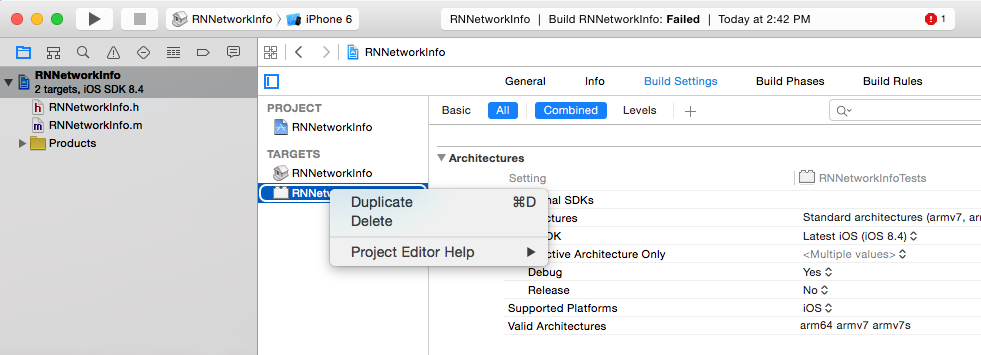

React Native: Packaging and Sharing Native Modules
While playing around with React Native I needed some functionality that wasn't provided by default. Fortunately, the React Native team gave us a bridge to use the iOS core libraries and Objective-C. I followed this tutorial and soon I had a working example. The next step was to package up my code so it could be easily imported in to other people's projects. Here is how packaged my native module react-native-network-info.
Prepare the node package
Since these libraries are distributed via NPM, first get the basic node package in place.
Create a new react native project
react-native init ExampleProjectCreate the package's meta json
mkdir ExampleProject/node_modules/react-native-network-info
cd ExampleProject/node_modules/react-native-network-info
npm initNote: if you want your module to appear on react.parts add the following keywords: "react-component", "react-native" and "ios".
Create the project file in Xcode
Open Xcode, "Create a new Xcode Project", "Cocoa Touch Static Library" click Next, Create a Product Name (e.g. RNNetworkInfo) and save it in our newly created folder in the node_modules folder (ExampleProject/node_modules/react-native-network-info)
Optional: I personally prefer a flatter directory structure for smaller projects like this so first I close Xcode then move the project, .h and .m file from the RNNetworkInfo folder to our module directory.
cd ExampleProject/node_modules/react-native-network-info
mv RNNetworkInfo/RNNetworkInfo/* .
mv RNNetworkInfo/RNNetworkInfo.xcodeproj/ .
rm -rf RNNetworkInfoOpen RNNetworkInfo.xcodeproj again and then correct the file location for both your .h and .m files.

Next make sure you click on the RNNetworkInfo project and delete the RNNetworkInfoTests target or you your build will fail.
Develop your Objective-C (or Swift) Library
Check out React Native's docs for more details on how to pass data between Objective-C and React Native.
Note: if you get "RCTBridge.h" file not found-- in Xcode click on the project in the left nav pane then go to Build Settings and in Header Search Paths add $(SRCROOT)/../react-native/React and $(SRCROOT)/../../React mark both as "recursive"
Build the project to make sure the build is successful.
Create the node package wrapper
Create "NetworkInfo.js" in ExampleProject/node_modules/react-native-network-info (or whatever name is in the 'main' attribute of your package.json).
In my case, I had 2 methods: getSSID and getIPAddress
'use strict';
var RNNetworkInfo = require('NativeModules').RNNetworkInfo;
var NetworkInfo = {
getSSID(ssid) {
RNNetworkInfo.getSSID(ssid);
},
getIPAddress(ip) {
RNNetworkInfo.getIPAddress(ip);
}
};
module.exports = NetworkInfo;Import your library from Xcode to ExampleProject
Open ExampleProject.xcodeproj
Right click on the Libraries folder and "Add files to ExampleProject" and find "RNNetworkInfo.xcodeproj" (in node_modules) and "Add"
Click on your Project then the "Build Phases" tab, Link Binary With Libraries, Plus icon to add, select libRNNetworkInfo.a and Add
Use your library in ExampleProject
Click on the play icon to bring up the simulator and see your react native boilerplate app. Once up, edit index.ios.js in your ExampleProject file, import and use your new package:
var NetworkInfo = require('react-native-network-info');
NetworkInfo.getIPAddress(ip => {
console.log(ip);
});Note: the console.log output will be in Xcode's debug console.
Share!
Once everything is complete just publish your node_module to NPM to make it easy for others to import :)